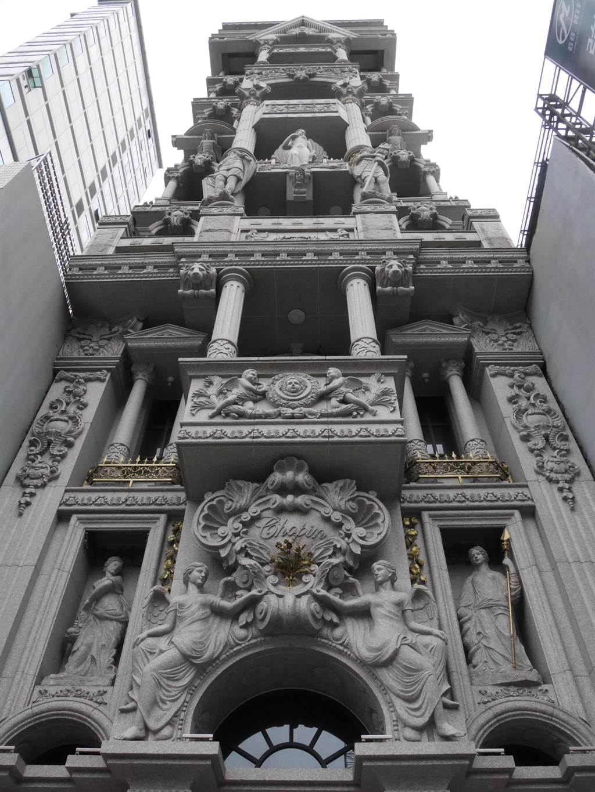

如果有去過日本的話，應該都會對當地整齊寬敞的街景印象深刻，相較之下台灣的馬路就比較擁擠凌亂，滿街的水泥大樓和招牌給人一種冷冰冰的感覺，不過最近有網友在桃園發現了一棟超獨特的建築，每個路過的人都會忍不住多看幾眼！
有網友在PTT上分享最近在路上看到的一棟巴洛克式建築，這棟建築物位在桃園市中心，距離桃園火車站只有步行3分鐘的距離，建築牆面的華麗風格和周遭的商店比起來顯得格格不入，原PO也表示從照片看起來好像很寬，但實際上現場看寬沒有超過10公尺，「重點是超窄，然後也不像店面，這裡面到底能幹嘛？有卦嗎？」
據傳這棟建築還曾登上國外網站reddit，而且後門打開還是懸空的....詭異又神秘的畫面引起熱烈討論，網友紛紛開玩笑表示：「霍格華茲桃園分院」、「魔法學院，對付中壢佛地魔」、「要經營鬼屋的吧？」、「巴黎聖母院啊」、「惡魔城」、「外國人說，這東西看起來惡魔惡魔的，根本不是歐式風格」，也有人說「只知道蓋這棟的後台很硬......」、「這老闆背景特殊，沒事鄉民真的不要去查」、「兩三年前路過拍照後問在桃園林口從事房仲介的朋友，結果她回答沒事不要太好奇那屋子」。
這棟建築其實屬於一位蕭姓屋主，學設計的他常到歐洲旅遊，想以此為靈感蓋一幢獨特又兼具美感的辦公室，還特地從國外引進粉花崗石等材料動工建造，他坦承這棟房子花了上億經費打造，主建物從B1到7樓，8樓到10樓則是景觀樓。
而房屋內部也別有洞天，純白細緻的雕刻和浮雕每個細節都耗工耗時，木工師傅也表示這是他們接過最棘手的案子之一，每個角落只要屋主不滿意就打掉重來，連牆壁的強度都比一般的高一倍，一般的鋼釘根本打不進去！
